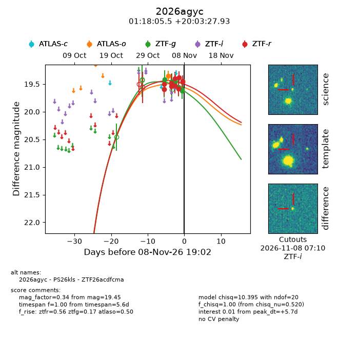
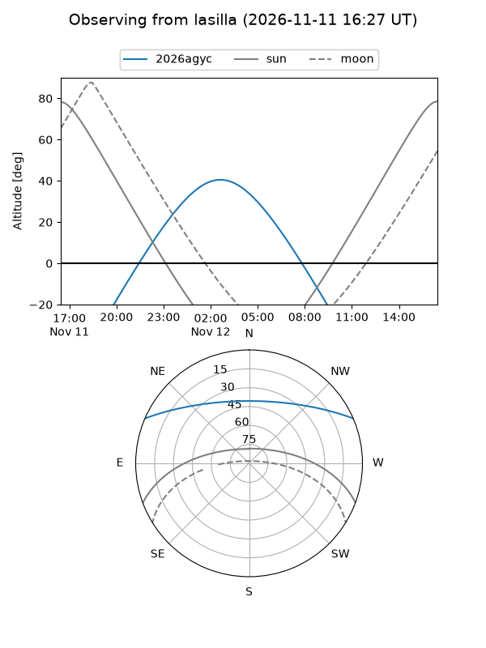
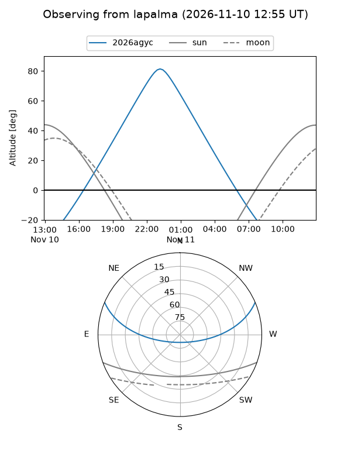
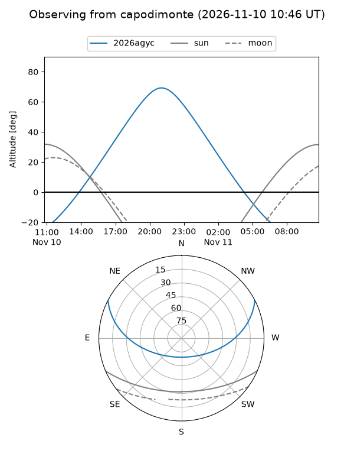
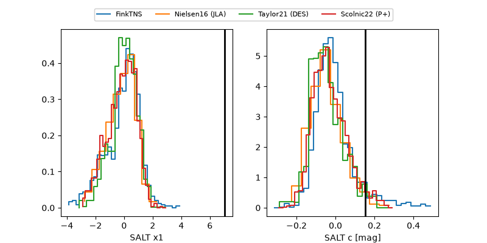

2026agyc
Target 2026agyc at 2026-11-08 19:04
Aliases and brokers:
FINK-ZTF: ztf.fink-portal.org/ZTF26acdfcma
Lasair-ZTF: lasair-ztf.lsst.ac.uk/objects/ZTF26acdfcma
ALeRCE-ZTF: alerce.online/object/ZTF26acdfcma
YSE-PZ: ziggy.ucolick.org/yse/transient_detail/2026agyc
TNS name: wis-tns.org/object/2026agyc
Direct TNS query: direct search
alt names
ZTF26acdfcma (ztf,fink_ztf)
2026agyc (tns,yse)
PS26kls (panstarrs)
Coordinates:
equatorial (ra, dec) = 19.5230,+20.05776
equatorial (HMS+DMS) = 01:18:05.52,+20:03:27.93
galactic (l, b) = (131.4166,-42.37445)
Flags:
peak dt: +5.7
Photometry:
last atlaso=19.35, ztfg=19.62, ztfr=19.45
1 atlaso, 7 ztfg, 10 ztfr detections
Lightcurve

Visibility



Additional plots
